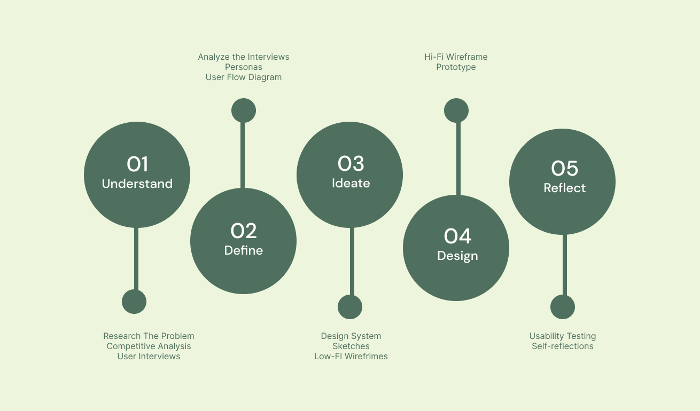
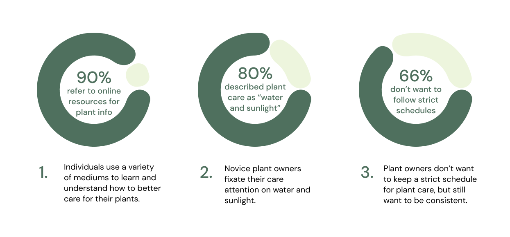
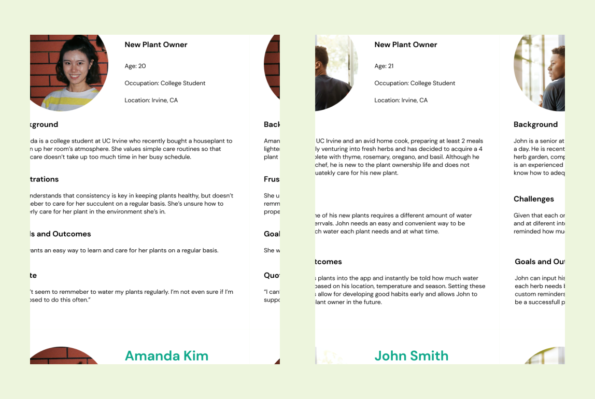
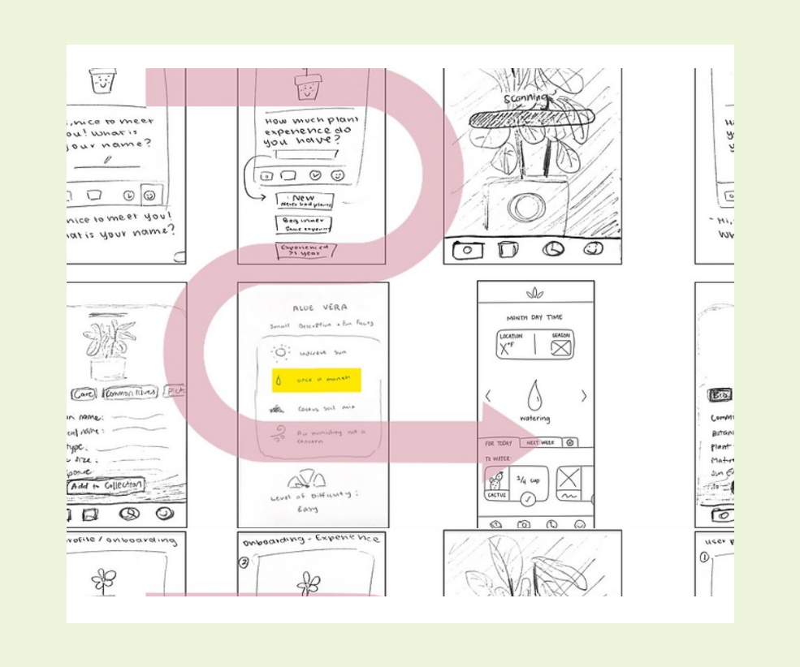
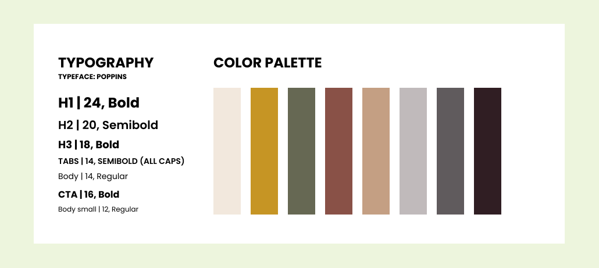
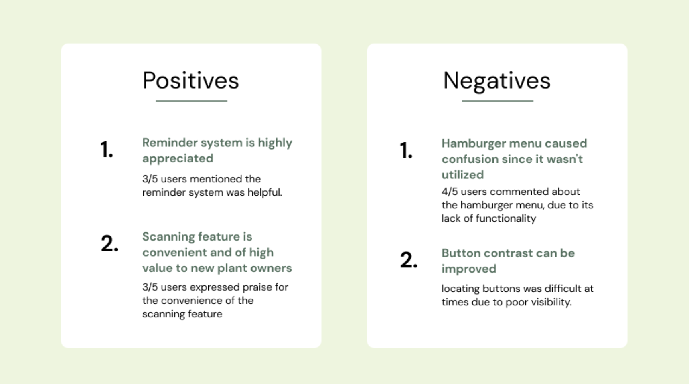

Rooted: A plant app
Project Overview
UC Irvine Informatics 132 Project Winter 2022
Duration: 10 weeks
Role: UX/UI Designer
The Design Team: Carly Chan, Hannah Limary, Karla Avalos (Me), Regina Tambunan, Kevin Tsai, Rohan Hemrajani
Purpose: With plant parenthood on the rise, novice plant owners are faced with a more difficult than expected task of maintaining their plant’s health. Our team designed a mobile application to better educate plant owners about their plants and how to properly take care of them in order to ease novice plant owner worries and help keep their plants healthy.
At A Glance 👀
The Problem
❗️
The Solution
🌿

Design Process
Understand
Research
In order to create a product that really meets the needs of our target audience, we decided to research the problem space, analyze current competitors, and interview potential users. These steps helped us gain a better understanding of user’s pain points and give insight on potential ways to help.
Evidence - Deseret Article / NY Post Article
Understand
Competitive Analysis
We analyzed 6 direct and indirect competitors in order to analyze existing patterns in the current market and identify key areas for improvement. By seeing what is already available in the market, we can create a more unique product that caters to what users actually need.
Understand
User Interviews
In order to gather data on the user's needs, we interviewed 12 participants across a range of experience levels (with plants). We then analyzed the information gathered from the interviews to identify key insights and patterns.
Understand
Interview Insights
In order to gather data on the user's needs, we interviewed 12 participants across a range of experience levels (with plants). We then analyzed the information gathered from the interviews to identify key insights and patterns.
From the affinity map, we found 3 key insights that could help us narrow the scope of our design:
Define
Personas
In order to visualize the type of users we would have, we created user personas. These personas helped us identify user pain points and motivations to use our app.
Define
User Flow
After analyzing the results of the interviews, we narrowed our focus to new plant owners who want help in plant care basics.
Ideate
Design System
For the sake of consistency throughout our design process, we created a design system. This set of guidelines will ensure consistent design and create a more cohesive look.
Ideate
Lo-Fi Wireframes
After evaluating and critiquing our sketches within our group, we found that there were changes to be made in our sketches to include into our mid-fi wireframes, as well as other features we wanted to include. Our full feature list includes: onboarding, plant encyclopedia, reminders, plant scanner, explore, and user profile.

Design
Onboarding
To make everything more personalized to the user, we created a straightforward onboarding process that can help show information more relevant to what the user may need to properly care for their specific plant type based on their experience level and location.
Identification
In order to make the plant identification process easier and faster, we decided to make a plant scanning feature that will allow users to input their plants with a quick camera scan. Knowing what plant you have is crucial to knowing how to properly care for it's specific needs.
- Time-efficient: scanning the plant is a quick and easy method that provides users with the plant’s information at a much quicker rate than searching through plant images/names
- Convenient: a quick camera scan can save so much time and effort from users who wish to identify their plants but don’t know where to even start
Education
Users mentioned that they wanted to be more informed about their plants in order to feel more readily prepared to care for them. To accomplish this goal, we implemented a plant encyclopedia which provides a list of alphabetically sorted plant names, as well as a search bar for easier navigation. Once the desired plant is selected, an information card of the plant is presented, giving information regarding it's care, issues, and background.
- Organized: The encyclopedia of plants gives an organized list of plants so it’s easy to find your plant by name, or simply if you want to scroll through and look at additional plants
- Explore: the explore section of the app allows users to filter plants by characteristics and learn more about their own plant or look at other plants as well.
Schedule & Reminders
Many users wanted help with keeping a consistent schedule for their plant care. To address this, we implemented a reminder & notification feature that will notify users of any immediate tasks, upcoming tasks, and prior tasks for each of their plants.
- Reminders: allowing the app to notify users of plant care updates or weather updates can help forgetful users of when their plant may need watering, sunlight, or additional care. This can help keep plants healthier and living longer.
- Scheduling: by having an entire schedule laid out, users can see in advance what their plant will need at a future date and plan accordingly.
Design
Prototype
To evaluate our high-fidelity prototype, we created a usability testing process. This process was designed for an interviewer to walk a user through a series of tasks, testing the usability of the screens and flows we included. We ended up conducting usability tests on 5 users, all new or interested plant owners (our target audience).
Reflect
User Testing
Reflect
Reflection
1.
Research is essential to creating products that solve real problems
2.
The entire design process is important!